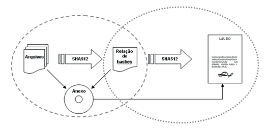
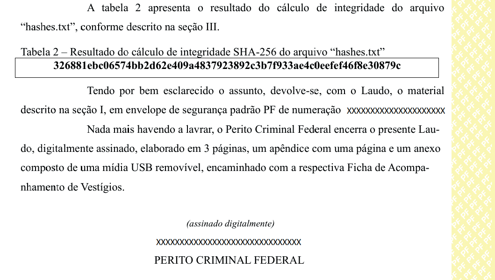
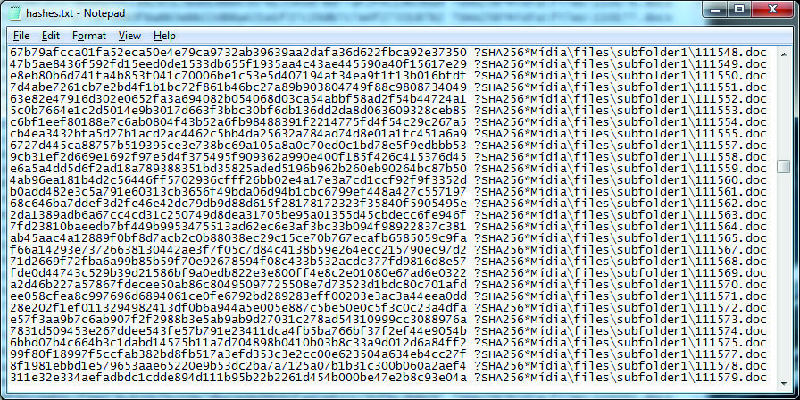

O laudo de exame de vestígios digitais deve descrever em detalhes todos os procedimentos adotados durante a análise, assim como os resultados obtidos e a forma de apresentação desses resultados – que geralmente consiste em uma seleção de arquivos gravados em mídia anexa. Um laudo típico da área de informática contém, além do preâmbulo, os seguintes itens: Histórico (opcional); Material; Objetivo; Exame e Respostas aos quesitos ou Conclusão. Considerações técnicas são normalmente apresentadas na forma de apêndices. Nos casos em que são selecionados poucos arquivos (como planilhas, documentos ou e-mails), pode-se, simplesmente, incorporá-los no corpo do Laudo. Entretanto, o mais comum é exportar os arquivos selecionados e gravá-los em uma mídia, encaminhados como anexo ao laudo. Isso acontece quando a quantidade de dados é muito grande ou quando o arquivo a ser encaminhado não pode ser visualizado em um documento, como no caso de arquivos executáveis, áudio e vídeo, por exemplo. Dessa forma, os arquivos são encaminhados em seu formato original, permitindo que grandes volumes de dados sejam anexados, facilitando a manipulação dessas informações, a rápida navegação pelos documentos, a busca por palavras- -chave, a ordenação e cálculos com valores, entre outros. A exemplo dos cuidados necessários com os vestígios digitais, o maior problema para o encaminhamento de arquivos em anexos digitais é garantir a sua integridade, uma vez que alguém poderia replicar o conteúdo, inserir/alterar algum arquivo ou substituir a mídia original sem deixar vestígios de qualquer manipulação. Para que isso seja evitado, é imprescindível que sejam adotados mecanismos que permitam a qualquer interessado verificar a integridade dos dados e a autenticidade dos anexos encaminhados, ou seja, verificar se os dados não foram acidental ou intencionalmente alterados e se tudo – e somente aquilo – que o Perito Criminal encaminhou continua presente no anexo.
Conforme já mencionado, com o uso de funções unidirecionais de resumo, é possível garantir que determinado arquivo não seja alterado sem que isso seja inequivocamente detectado, ou seja, é possível garantir sua integridade. Essa é uma das condições para a aceitação de vestígios digitais encaminhados em mídias de armazenamento digital, evitando que tais arquivos sejam alterados no intervalo compreendido entre a perícia e os demais responsáveis pela persecução penal. No caso concreto dos laudos produzidos na Polícia Federal, cada arquivo contido no anexo é submetido ao cálculo de um algoritmo de hash, cujo resultado é registrado em uma linha de um arquivo texto. Ao final, obtém-se uma lista com a relação de todos os arquivos e o seu respectivo valor de hash representado em caracteres hexadecimais, a qual, por questões de ordem prática (os laudos produzidos na Polícia Federal podem conter dezenas de milhares de arquivos), é gravada na própria mídia anexa. Fica garantida, desta forma, a integridade individual dos arquivos encaminhados, já que, a qualquer momento, poderão ser feitas verificações posteriores de seus valores de hash. Surge, então, uma segunda questão ligada à realização de tais verificações: como garantir que a lista de hashes utilizada é, de fato, aquela gerada pelo perito criminal no momento da emissão do laudo? Ou, em outras palavras: como assegurar a autenticidade da mídia anexa ao laudo? Nos laudos periciais da Polícia Federal, este problema é resolvido calculando-se o valor do hash do arquivo de texto que contém a lista de hashes e transcrevendo esse valor de hash no corpo do Laudo, que é assinado digitalmente. Vincula-se, desta forma, a integridade dos arquivos anexados e a autenticidade da própria mídia utilizada ao teor do Laudo pericial digital, que por sua vez pode ser autenticado por meio da assinatura digital. A figura a seguir ilustra o processo realizado (o círculo tracejado demonstra o mecanismo de garantia de integridade dos arquivos e o círculo pontilhado demonstra o mecanismo de garantia de autenticidade da mídia anexa – deve-se destacar que o mecanismo de garantia de autenticidade também garante a integridade).

Figura 21 – Integridade e autenticação de um anexo digital
Os seguintes passos devem ser seguidos para a correta geração do anexo digital do Laudo pericial: a) criação da lista de hashes: usar um software para gerar uma lista com os hashes de todos os arquivos que serão gravados no anexo, armazenando essa lista em um arquivo de nome hashes.txt, por exemplo; b) cálculo do hash da lista de hashes: usar novamente o software, mas desta vez para calcular o hash do arquivo hashes.txt gerado no passo anterior. O valor do hash calculado deve então ser transcrito para o corpo do Laudo; c) gravação dos arquivos no anexo: usar um software para gerar um arquivo-contêiner (ISO, ZIP, E01 etc.) a partir da seleção de todos os arquivos e subpastas existentes no diretório que contém o resultado dos exames juntamente com o arquivo hashes.txt gerado no primeiro passo. Esse arquivo-contêiner então é gravado na mídia que será encaminhada como anexo do laudo, adotando-se providências para que ela não permita alterações de seu conteúdo (uso de mídias óticas não regraváveis ou de pendrives/HDs externos configurados como somente leitura por meio do comando DiskPart, por exemplo).
Os seguintes passos devem ser seguidos para a correta verificação do anexo digital do Laudo pericial: a) cálculo da integridade da lista de hashes: usar um software para calcular o hash do arquivo hashes.txt (continuando o exemplo anterior) contido no anexo. Comparar o resultado calculado com o valor presente no corpo do Laudo; b) cálculo da integridade dos arquivos: calcular o hash de todos os arquivos gravados na mídia ótica e comparar o resultado com os valores armazenados na listagem hashes.txt. O resultado do passo (a) deve ser dois valores idênticos (o presente no corpo do Laudo e o valor recém-calculado). O resultado do passo (b) deve ser a correta verificação de todos os arquivos presentes na mídia, sem nenhuma falha. Com isso, garante-se a autenticidade da mídia e a integridade do seu conteúdo.

Figura 22 – Exemplo do conteúdo do arquivo hashes.txt

Figura 23 – Exemplo do hash do arquivo hashes.txt presente no fi nal de um Laudo
Referências AccessData Corp. FTK User Guide, Lindon, Utah, EUA: AccessData, 2010. CASEY, Eoghan. Digital Evidence and Computer Crime - Forensic Science, Computers and the Internet, Reino Unido-GB: Elsevier Academic Press, 2004. DoJ, Department of Justice. Electronic Crime Scene Investigation: A Guide for First Responders, EUA: NIJ Guide, julho, 2001. DoJ, Department of Justice. Forensic Examination of Digital Evidence: A Guide for Law Enforcement, EUA: NIJ Guide, abril, 2004. PF, POLÍCIA FEDERAL. Instrução Técnica 003/2010-Ditec/PF, Brasília: Boletim de Serviço Nº 093, maio, 2010. PF, POLÍCIA FEDERAL. Instrução Técnica 017/2013-Ditec/PF, Brasília: Boletim de Serviço Nº 022, janeiro, 2013. PF, POLÍCIA FEDERAL. Instrução Técnica 018/2013-Ditec/PF, Brasília: Boletim de Serviço Nº 007, abril, 2013. PF, POLÍCIA FEDERAL. Portaria Ditec/PF nº 1710, de 02 de março de 2026, Brasília. ELEUTÉRIO, Pedro M. S.; MACHADO, Márcio P. Desvendando a Computação Forense, São Paulo: Novatec Editora, 2010. FBI, FEDERAL BUREAU OF INVESTIGATION, Evidence Examinations, EUA: Handbook of Forensic Services, URL: http://www.fbi.gov/hq/lab/handbook, 2003. INTERPOL, IT security and crime prevention methods, URL: www.interpol.int/Public/ TechnologyCrime/ CrimePrev/ITSecurity.asp, outubro, 2004. IOCE, International Organization on Computer Evidence, Guidelines for best practice in the forensic examination of digital technology, EUA: maio, 2002. KUPPENS, Luciano L. Utilização de dicionários probabilísticos personalizados para decifrar arquivos em análises periciais. Dissertação de Mestrado em Engenharia Elétrica: Universidade de Brasília, Brasília, 2012. NHTC, National Hi-Tech Crime Unit. Good Practice Guide for Computer based Electronic Evidence, Reino Unido-GB: ACPO Guide, 2004. RUBACK, Marcelo C. Mineração de dados aplicada à construção de bases de hash em computação forense. Dissertação de Mestrado em Engenharia Elétrica: Universidade de Brasília, Brasília, 2011. STALLINGS, William. Cryptography and Network Security: Principles and Practice, Fifth edition, EUA: Prentice Hall, 2011. TANENBAUM, Andrew. Sistemas Operacionais Modernos, 2ª Edição, São Paulo: Prentice Hall, 2003.